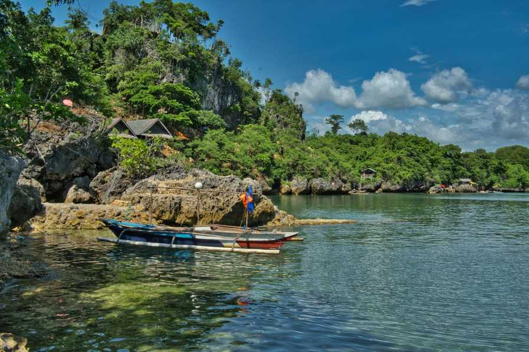

Guimaras has no airport, and no ship sails there straight from Cebu or Manila. Every route ends the same way: you get yourself to Iloilo City on Panay, walk onto a small passenger boat, and cross the Iloilo Strait in about a quarter of an hour. Planning the trip really comes down to one question. How do you want to reach Iloilo?
For most people the answer is a flight. Cebu and Manila both have nonstop services to Iloilo International Airport, and with an early departure you can be eating mangoes in Jordan by lunch. The overnight ships still run from both cities for anyone who would rather sleep on the water, bring a vehicle or skip flying, but they turn a morning's travel into a full day or more.
This guide covers each starting point on its own, then walks through the boat crossing, getting around once you land, the trip back out, and the small mistakes that leave people waiting at the wrong wharf.

Getting to Guimaras at a glance
- Gateway: Iloilo City, on Panay; every route passes through it
- Main boat: Ortiz Wharf, Iloilo City to Jordan Wharf, about 15 to 20 minutes
- Second boat: Parola Wharf, Iloilo City to Buenavista Wharf, for the north of the island
- Pump boat fare: around ₱40 by day, around ₱50 after 8 p.m., plus a small terminal fee
- Fastest from Cebu or Manila: fly to Iloilo, then taxi to the wharf; roughly 3 to 4 hours door to island
- With a car or motorbike: use the RoRo between Iloilo City and Jordan
Why Every Trip Goes Through Iloilo City
Guimaras is a small island province sitting just off the southeast coast of Panay, close enough to Iloilo City that you can see it from the waterfront. Its own ports only serve the short hop across the strait, so travellers from anywhere else funnel into Iloilo first.
You will land at one of two wharves on the Guimaras side. Jordan is the capital town and the one most first-timers use. The provincial tourism office is near the port, tricycles wait at the gate, and the main road down the island starts there. Buenavista sits further north and makes more sense if your resort or beach is on that side.
The same logic holds if you are coming over from Negros. A fastcraft from Bacolod to Iloilo City takes about an hour, and from there you cross to Guimaras like everyone else. There is no boat that skips Iloilo.
Pick Your Starting Point
Already in Iloilo City
Pump boat from Ortiz or Parola
Fifteen to twenty minutes on the water. Easy enough for a day trip if you leave in the morning.
Starting in Cebu
Fly to Iloilo, or take the night ship
The flight is under an hour. The overnight ship takes about 12 to 14 hours and sails only on certain evenings.
Starting in Manila
Fly to Iloilo
About 1 hour 10 minutes in the air with plenty of daily flights. The ship option runs 20 hours or more.
Fares and sailing days shift with the season and with demand. Use every figure in this guide as a planning range, then check the current price and departure time with the airline, the shipping line or the ticket window before you go.
The Crossing: Iloilo City to Guimaras
Whether you flew in, sailed in or woke up in an Iloilo hotel, this short boat ride is the part everyone shares. Most visitors use the Ortiz to Jordan route.
The main crossing
Ortiz Wharf to Jordan Wharf
Day fareAbout ₱40After 8 p.m.About ₱50Pay withCash
-
Step 1
Head to Ortiz, not Parola
Ortiz Wharf serves Jordan. Parola Wharf serves Buenavista. Tell your taxi or jeepney driver "Guimaras boat to Jordan" so you end up at the right one.
-
Step 2
Buy your ticket and pay the terminal fee
The regular daytime fare is around ₱40. Students, senior citizens and persons with disabilities pay around ₱32 with a valid ID. After 8 p.m. it goes up to around ₱50, or ₱40 discounted. Expect a small terminal fee on top.
-
Step 3
Board and wait for the boat to fill
Boats go out often through the day, usually every 15 to 30 minutes and faster at busy times. A pump boat leaves once it has enough passengers, so a quiet afternoon can mean a short wait.
Going north instead? Boats from Parola Wharf to Buenavista take about the same time and charge a similar fare.
When the strait is choppy, one route can be noticeably calmer than the other. Your hotel front desk or the people at the ticket window will know which side the locals are using that day.
From Iloilo Airport to the wharf
Iloilo International Airport is not in the city. It sits in Cabatuan, and the drive to Ortiz or Parola takes 30 to 45 minutes depending on traffic. A taxi is the simplest choice if you have bags, and the fare usually lands somewhere between ₱500 and ₱800. Settle on the wharf before the car pulls away.
Vans also run from the airport into the city, and some end near SM City Iloilo, where a short jeepney or taxi ride finishes the job. Once you are in the city proper, jeepneys are the cheapest way to reach Ortiz; tell the driver you want the Guimaras boats and they will drop you close.
Leave some slack in the schedule. A plane that touches down at noon rarely means a noon boat once you add baggage claim, the drive, a ticket line and a boat that waits to fill. An extra hour is a fair guess.
Bringing a car or motorbike
Vehicles cross on the roll-on/roll-off (RoRo) ships between Iloilo City and Jordan rather than on pump boats. The trip takes longer, often 30 to 45 minutes, and the fare depends on what you are driving. A motorbike costs a lot less than a car or van. Vehicle space fills up on weekends and holidays, so turn up early and ask at the port which pier the RoRo is using.
Getting There from Cebu
Flying to Iloilo
This is the route that makes sense for nearly everyone. Nonstop flights link Mactan-Cebu International Airport and Iloilo several times a day, and the flight itself takes under an hour.
Add 30 to 45 minutes on the road from Iloilo Airport to the wharf and 15 to 20 minutes on the boat, and you are on Guimaras roughly 3 to 4 hours after leaving home, depending on how long check-in and the waits take. A morning flight gives you most of the first day on the island. A late flight still works, but if you land after dark you will find fewer boats and pay the night fare.
The overnight ship
Passenger ships sail overnight between Cebu City and Iloilo City, with departures in the early evening and arrival the next morning after about 12 to 14 hours at sea. Between the operators on this route there are sailings on Monday, Thursday, Friday and Sunday evenings, though each line only runs on its own two nights.
Fares begin at roughly ₱1,300 to ₱1,400 for the most basic bunk and climb to about ₱2,900 or more for tourist class, cabins and private rooms. The ship suits travellers who don't fly, want to save a night's hotel bill, or are bringing a vehicle. It does not suit a tight schedule. With so few sailings a week, missing one can cost you days instead of hours. Once you dock in Iloilo, take a taxi or jeepney to Ortiz or Parola and cross from there.
For most first-time visitors the flight wins. The ship makes a good story, but it stretches a half-day journey into a full one.
Getting There from Manila
Flying to Iloilo
Manila has the most choice. Several airlines, Cebu Pacific and Philippine Airlines among them, fly nonstop from Ninoy Aquino International Airport to Iloilo throughout the day. Time in the air is about 1 hour to 1 hour 20 minutes.
With the road transfer and the boat added on, door-to-island time is again around 3 to 4 hours, before counting check-in and security. Book a morning flight when you can. Delays in Manila tend to stack up as the day goes on, and an early arrival leaves you a full afternoon on Guimaras. In peak season, get to NAIA earlier than you normally would.
The long way by sea
Passenger ships also connect Manila and Iloilo City a few times a week, with sailings usually spread across Tuesday, Thursday and Saturday. The voyage takes about 20 to 30 hours, depending on whether the ship stops in Bacolod on the way. Fares start at around ₱1,400 to ₱1,500 for basic accommodation and run to several thousand pesos for tourist, business class and cabins.
You get a bunk, meals on board and a day at sea, which some travellers love. It is also the option most affected by weather, since rough seas slow the ship and schedules can change. Choose it only with a flexible itinerary. For a short holiday, fly; the ship eats up two days, and by the time you pay for a cabin and meals the savings are often smaller than they look.
Coming Over from Bacolod
Guimaras pairs well with a few days in Bacolod, and the connection is easy. Fastcraft services run between Bacolod and Iloilo City many times a day, take about an hour, and cost roughly ₱500 to ₱880 depending on the operator and seat class. Walk or ride from the Iloilo port to Ortiz or Parola, and you can reach Guimaras in about 2 to 3 hours in total. If you are still planning the Negros side, our first-timer's guide to Bacolod City covers what to do there.
Getting Around Once You Land
Guimaras has no big bus network like Panay or Negros. Getting around means tricycles, a smaller number of jeepneys, or your own two wheels.
- TricycleBest for short rides into Jordan town or to nearby resorts. Agree on the fare before you sit down; the price rises quickly the further you go.
- JeepneyCheaper but less frequent than in Iloilo. Fine for reaching a main town when you are not in a hurry.
- Tricycle or van for the dayThe easiest way to see several spots in one go. A tricycle for up to three people runs about ₱1,200 to ₱1,500 for the day, depending on route and season. Fix the stops, waiting time and total price at the wharf.
- Rented motorbikeThe island is small enough to loop in a day, but road quality varies. Wear a helmet and check the brakes and tyres before paying.
The tourism office near Jordan Wharf is worth a stop if you have not sorted out a place to stay or a tour. The staff can point you to the right tricycle queue and give you a sense of fair prices.
Leaving Guimaras
The trip out is the arrival in reverse. Boats from Jordan and Buenavista run back to Iloilo City through the day, with the last trips leaving in the early evening, and the night fare applies after 8 p.m. If you have a flight, plan on an earlier boat than the last one so a full boat or rough water does not leave you stuck.
From Iloilo you can fly or sail back to Cebu or Manila, or take a fastcraft over to Bacolod. When flying out, leave Guimaras at least 3 to 4 hours before departure time to cover the crossing, the drive to Cabatuan, check-in and a buffer. With half a day to spare in the city, the Iloilo heritage walk along Calle Real and Jaro fits neatly before an evening flight.
Small Things That Save Time
Before you cross
- Pack lightYou will carry your bags onto a pump boat, along a wharf and into a tricycle. A backpack is far easier than a big suitcase.
- Bring cash, in small billsBoats, tricycles and small shops mostly take cash, and ATMs on the island are few. Change makes every line move faster.
- Cover your bagsThe crossing is short, but spray still gets in. A dry bag or plastic cover keeps a phone or camera safe.
- Check the seaThe Iloilo Strait can turn rough fast. If it looks bad, ask at the terminal whether boats are running normally before you buy anything.
- Book early for holidaysLong weekends, Holy Week and the Manggahan Festival season in May bring crowds, and flights to Iloilo fill up.
- Double-check the farePrices get adjusted. A quick look at the posted rates at the ticket booth avoids surprises.
Making the Most of Day One
Arrive before noon and you still have a proper afternoon. Drop your bags, grab lunch in Jordan, then choose one side of the island instead of trying to see it all. The coast suits a lazy beach afternoon, while the inland roads lead to mango farms, viewpoints and quiet towns. Mangoes are the reason many people come at all, and our Iloilo and Guimaras food trip lists what to eat on both sides of the strait.
If you get in late, keep the evening simple. Check in, eat near where you are staying and save the island tour for the morning. Roads are quieter early, the light is softer, and boats out to the small islands off the coast tend to leave earlier in the day.
Frequently Asked Questions
Is there a direct ferry from Cebu or Manila to Guimaras?
No. Fly or sail to Iloilo City first, then take a pump boat to Jordan or Buenavista.
How long is the boat ride from Iloilo to Guimaras?
About 15 to 20 minutes by pump boat. The RoRo for vehicles takes around 30 to 45 minutes.
How much is the boat from Iloilo to Guimaras?
Around ₱40 during the day and around ₱50 after 8 p.m., with lower fares for students, senior citizens and persons with disabilities. A small terminal fee may be added.
Can you visit Guimaras as a day trip from Iloilo?
Yes. Leave Iloilo early, hire a tricycle for the day and you can cover the main sights before the evening boats. Stay a night or two if you want beach time or island hopping without rushing.
Which wharf should first-time visitors use?
Ortiz Wharf in Iloilo City to Jordan Wharf. It puts you next to the tourism office, the capital town and the main road around the island.
Photo credit: Elly Mar Tamayor on Pexels.

Comments
No comments yet. Been here recently? Share a tip or ask a question.
Leave a Reply